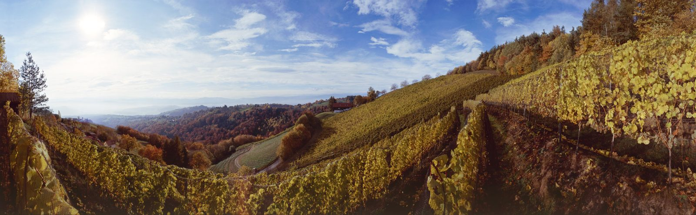
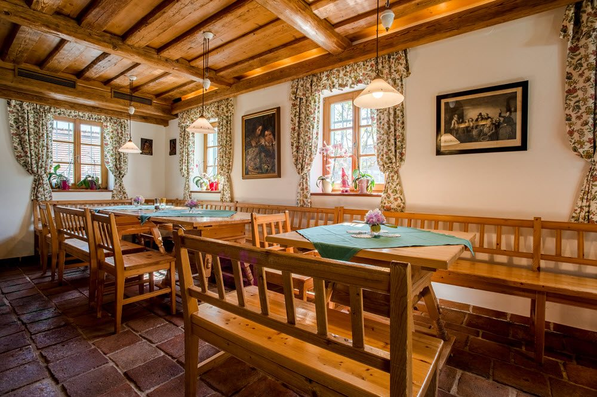

Unser Weingut
Auf besonderen Rieden wachsen Trauben für wunderbare Weine. Roter und blau-schwarzer Schiefer, Tonschiefer, Serizite und Kalifeldspat prägen jede Flasche.

Kitzeck im Sausal · Südsteiermark
gewachsen auf Sausaler Urgestein
12 Hektar Steillage zwischen 530 und 650 Metern Seehöhe, ein Buschenschank im Biedermeier-Herrenhaus von 1837 und ein Weinshop, der bis vor die Haustür liefert.
Freitag bis Dienstag ab 13.00 Uhr
Mittwoch und Donnerstag Ruhetag
Montag, 20. Juli
Sommerpause 29.7. bis 6.8.2026
Auch außerhalb der Öffnungszeiten
bei Voranmeldung unter +43 3456 3189
Drei Wege zu uns
Auf besonderen Rieden wachsen Trauben für wunderbare Weine. Roter und blau-schwarzer Schiefer, Tonschiefer, Serizite und Kalifeldspat prägen jede Flasche.
Ausgezeichneter Buschenschank im einzigartigen Biedermeier-Herrenhaus – von Falstaff 2025 zum schönsten Ambiente gekürt.
In unserem Online-Shop können Sie unsere Weine bequem von zu Hause aus bestellen – versandfertig in 6er- und 12er-Kartons.
Der preisgekrönte Lohn unserer Arbeit
wein.plus bezeichnet das Weingut als einen der besten Produzenten der Region, auf Tripadvisor steht der Buschenschank bei 5,0 von 5 Punkten.
Acht Original-Urkunden der AWC Vienna 2025 – zum Vergrößern anklicken.

Neu im Shop
Südsteiermark DAC – Gelber Muskateller, Sämling / Scheurebe, Sauvignon blanc und Weißburgunder.
Die frischen Klassikweine des Jahrgangs 2025 sind im Weinshop verfügbar. Dazu kommen die Trophysieger des Jahres: Gelber Muskateller Kitzeck-Sausal 2024, Sauvignon blanc Kreuzegg Reserve 2022, Zwickl Reserve 2021 und der Weißburgunder Sekt Felberjörgl Brut.
Sie finden uns hier
Das Weingut liegt im Herzen der Großlage Sausal in Höch am Demmerkogl – oberhalb von Kitzeck, dem höchstgelegenen Weinort Mitteleuropas.
Route in der Karten-App öffnen – keine eingebettete Karte, daher kein Tracking und kein Cookie-Banner.